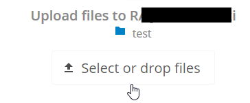

Making anonymous uploads
You may create your own special upload directories so that other people can upload files to you without having to log in to the server, and without being a Nextcloud user. They will not be allowed to see the contents of this directory, or to make any changes. This is an excellent alternative to sending large attachments via email, using an FTP server, or using commercial file-sharing services.
Setting up your own file drop
Go to Files and create or choose the folder, the anonymous upload should be made to:

Check Share Link, Allow editing, Hide file listing:

Now you can send the link to the upload folder manually or by using the Nextcloud send function, if your administrator has enabled it.
Uploading files
Using the anonymous upload function is simple. You receive a link to the upload folder, click the link, and then you'll see a Nextcloud page with a "Click to upload" button:
This opens a file picker, and you select the file or directory you want to upload. You're also able to just drop files into the window.
When your upload is completed, the filenames are listed: